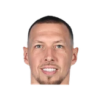

“And the question of like, ‘Why would he do that?’ The reason that Sam Presti kicked the tires on hiring Brian Windhorst from ESPN is that information to Sam Presti is currency. It is an edge, a competitive advantage. And you don’t surrender that information.”
What Pablo Torre has said about other NBA players and coaches
6 quotes from Pablo Torre about 6 other people around the NBA, newest first. Each one links to its original source.
Best quotes
“When the NBA tried to settle with Steve Ballmer, and they said, ‘Hey we have a narrow scope, we have undeniable evidence, we want to just make sure that you have the opportunity to take your punishment, admit wrongdoing, and let us all move on.’ Steve Ballmer — according to everything that we’ve seen now play out in public after that ESPN story two weeks ago — decided to fight,”
Torre said on the Dan Patrick Show.
“And the NBA said, well in that case, we’re going to do something that perhaps caught Steve Ballmer by surprise. They found a way to settle with Kawhi Leonard and the Players’ Union…They got Kawhi to settle.”
Quotes per season
Pablo Torre talks most about
- Pablo Torre on Brian Windhorst2 quotes
- Pablo Torre on Steve Ballmer2 quotes

Daniel Theis1 quote Jalen Brunson1 quote
Jalen Brunson1 quote Kawhi Leonard1 quote
Kawhi Leonard1 quote- Sam Presti1 quote
2026-27
4 quotesTorre said on the Dan Patrick Show.
“And the NBA said, well in that case, we’re going to do something that perhaps caught Steve Ballmer by surprise. They found a way to settle with Kawhi Leonard and the Players’ Union…They got Kawhi to settle.”
“When the NBA tried to settle with Steve Ballmer, and they said, ‘Hey we have a narrow scope, we have undeniable evidence, we want to just make sure that you have the opportunity to take your punishment, admit wrongdoing, and let us all move on.’ Steve Ballmer — according to everything that we’ve seen now play out in public after that ESPN story two weeks ago — decided to fight,”
However, the representative subsequently stopped responding to questions about Theis' involvement with the soccer club.
“A rep for Daniel Theis, after initially showing interest in scheduling an interview with Theis and WPRI, ghosted our local news friends,”
“I’m getting stopped on the street regularly by people saying, ‘Leave Jalen Brunson alone,’”
2024-25
2 quotes“And the question of like, ‘Why would he do that?’ The reason that Sam Presti kicked the tires on hiring Brian Windhorst from ESPN is that information to Sam Presti is currency. It is an edge, a competitive advantage. And you don’t surrender that information.”
“One thing I can report is that a little over a decade ago, he actually explored our extremely plugged-in buddy, Brian Windhorst, away from ESPN, to work as an information guy for the Thunder,”